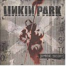
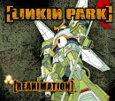

|
|
- Discography -
 The following is Linkin Park's discography of their major LP's from when the band was first formed up until
March of 2004. Hybrid theory is the band's debut LP (the name of the album is the band's original name). Soon
after, Reanimation was released, which is a remix of all the songs from Hybrid Theory, produced with the help of
some underground hip-hop producers such as Kutmasta Kurt, Alchemist, Cheapshot and the X-ecutioners.
Guest vocalists also include Korn's Jonathan Davis and Staind's Aaron Lewis. Meteora is the band's true sophmore
album, and includes a special-edition DVD that details the trails and tribulations of making an album that could
live up to its predeccesor. Linkin Park: Live in Texas is a CD/DVD combo of their Texas concert from the Summer
Sanitarium tour. It includes songs from both Hybrid Theory and Meteora.
The following is Linkin Park's discography of their major LP's from when the band was first formed up until
March of 2004. Hybrid theory is the band's debut LP (the name of the album is the band's original name). Soon
after, Reanimation was released, which is a remix of all the songs from Hybrid Theory, produced with the help of
some underground hip-hop producers such as Kutmasta Kurt, Alchemist, Cheapshot and the X-ecutioners.
Guest vocalists also include Korn's Jonathan Davis and Staind's Aaron Lewis. Meteora is the band's true sophmore
album, and includes a special-edition DVD that details the trails and tribulations of making an album that could
live up to its predeccesor. Linkin Park: Live in Texas is a CD/DVD combo of their Texas concert from the Summer
Sanitarium tour. It includes songs from both Hybrid Theory and Meteora.
|

|
Hybrid Theory
Publisher: Warner Brothers
Released: 24 October, 2000
Tracklisting:
- Papercut
- One Step Closer
- With You
- Points Of Authority
- Crawling
- Runaway
- By Myself
- In the End
- A Place for My Head
- Forgotten
- Cure for the Itch
- Pushing Me Away
|
|

|
Meteora
Publisher: Warner Brothers
Released: 30 July, 2002
Tracklisting:
- Opening
- Pts. Of Athrty
- Enth E Nd
- Chali
- Frgt/10
- P5hng Me A*wy
- Plc.4 Mie Haed
- X-ecutioner Style
- H! Vltg3
- Riff Raff
- Wth>You
- Ntr/Mssion
- PPr:Kut
- Rnw@y
- My{Dsmbr
- Stef
- By_Myslf
- Kyur4 Th Ich
- 1stp Klosr
- Krwlng
|
|
|
Meteora
Publisher: Warner Brothers
Released: 25 March, 2003
Tracklisting:
- Foreword
- Don't Stay
- Somewhere I Belong
- Lying From You
- Hit The Floor
- Easier To Run
- Faint
- Figure.09
- Breaking The Habit
- From The Inside
- Nobody's Listening
- Session
- Numb
|
|
|
Linkin Park: Live in Texas
Publisher: Warner Brothers
Released: 18 November, 2003
Tracklisting:
- Somewhere I Belong
- Lying From You
- Papercut
- Points Of Authority
- Runaway
- Faint
- From The Inside
- P5hng Me A*wy
- Numb
- Crawling
- In The End
- One Step Closer
|
Return to the Top
|